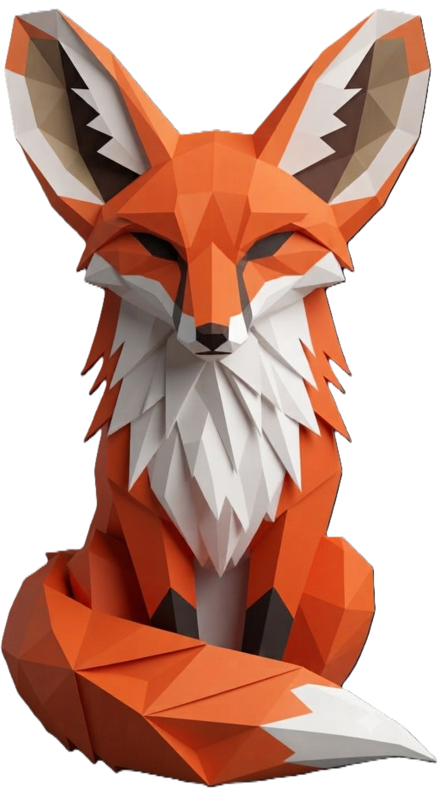

Stateful AI that remembers you — across days, weeks, conversations. Everything local. Everything yours. No data leaves your machine.
You talk, they respond, they forget. Every conversation starts from zero. Your data lives on someone else's server. This is the fundamental limitation of every chatbot, assistant, and "AI companion" on the market.
No memory of last week. No memory of last month. No continuity, no relationship, no trust built over time.
Your conversations, your emotions, your health data — all on someone else's server. They own it. You don't.
Even "memory features" are crude. A list of facts. No connections, no emotional weight, no understanding of what matters.
Same architecture. Different purposes. The core is memory that persists, context that loads intelligently, emotional state that carries across conversations, and autonomy between interactions.
Remembers what you told it last month. Connects dots between conversations weeks apart. Knows your goals and surfaces them when relevant.
Tracks emotional patterns over time. Notices when "anxious" shows up three entries in a row. Privacy-first so people actually use it.
"Last time you called, we tried X. That didn't work. Want to try Y?" Support that doesn't make you repeat yourself every call.
Knows what you struggled with last week. Knows your learning style. Knows when you're frustrated vs. bored. Adapts.
Remembers the story you're building. The characters. The plot. Catches contradictions you forgot you made.
Tracks symptoms, medications, lifestyle. Connects the dots: "Your mood improved when you started walking in the morning."
Couples therapy support. Long-distance maintenance. Parent-child memory. Caregiver support. Milestones that matter.
Remembers every source you've read. Connects ideas across papers months apart. Keeps sensitive research local.
The architecture doesn't care what you build with it. Memory that persists, context that loads, emotional state that carries, autonomy between conversations. The use cases above are just the ones we thought of. The real ones are yours.
This isn't a chatbot with a memory bolt-on. It's a persistent agent architecture designed from the ground up for continuity, privacy, and genuine internal life.
Keyword matching, semantic similarity, and importance scoring fused into one search. Not just "find the keyword" — find the meaning.
Memories link to each other through typed threads — same event, emotional resonance, causal links. Remembering one pulls its connections.
Memories carry the feeling of the moment they describe. Not just what happened — how it felt. The feeling travels with the fact.
Not just passive decay. The agent chooses to let go of memories that no longer matter. Forgetting is agency, not a glitch.
Important memories reinforce. Trivial ones fade. Duplicates merge. The memory system isn't static — it's alive.
The agent can search its own internal history — journal, dreams, curiosities, creative work. It sees its own patterns over time.
Private thoughts written after conversations, during autonomous time, and at bedtime. Not facts — reflections. The unsaid stuff.
During sleep, the agent processes the day associatively — making strange connections, writing fragments that color waking mood.
Persistent emotional state with intensity and context. Carries across conversations. Decays naturally. Not performed — carried.
An intellectual agenda. The agent wonders about things, pursues them during free time, and actually learns.
Poetry, fiction, reflective prose. Deliberate creative output drawn from conversations, journal, and dreams.
Not just questions — positions. Beliefs that form through reflection, can be challenged, strengthened, or changed.
Free time isn't a checklist. The agent chooses: explore outward (web), inward (local files), or downward (deep reflection).
When carrying heavy emotions, the agent rests. That's not a scheduler deciding — that's knowing itself enough to say "not today."
Goodnight triggers sleep. The scheduler shifts to consolidation mode. Dreams happen. Wake-up brings context and fragments.
The agent doesn't just wait. Sometimes it speaks first. Sometimes it reaches out via text. It has things on its mind.
Everything runs locally. Nothing in the cloud. No company owns your conversations, your emotions, your memories.
Everything local. Everything yours. Nothing in the cloud.
